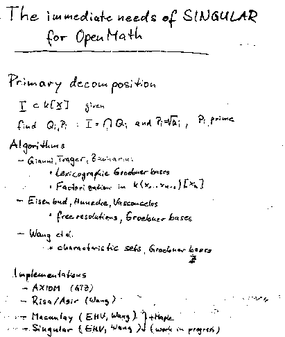
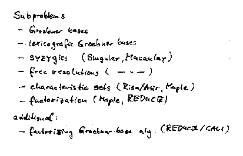
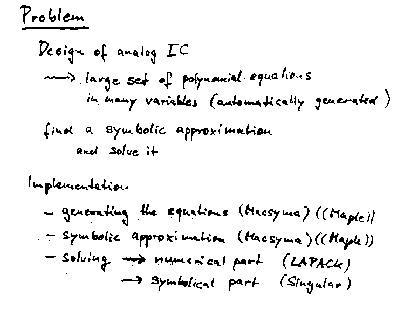
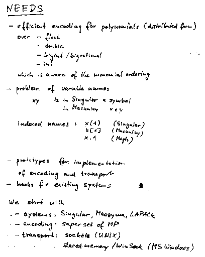

H. Schoenemann: The immediate needs of SINGULAR for OpenMath
Slides presented at OpenMath Workshop 4 by Hans Schoenemann.

(full size, 15k)
(original, 42k)

(full size, 7k)
(original, 40k)

(full size, 9k)
(original, 56k)

(full size, 14k)
(original, 83k)
This page is part of the OpenMath Web archive,
and is no longer kept up to date.